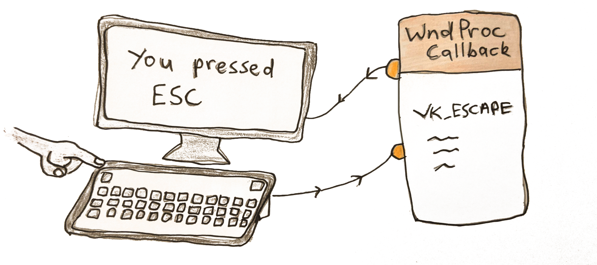
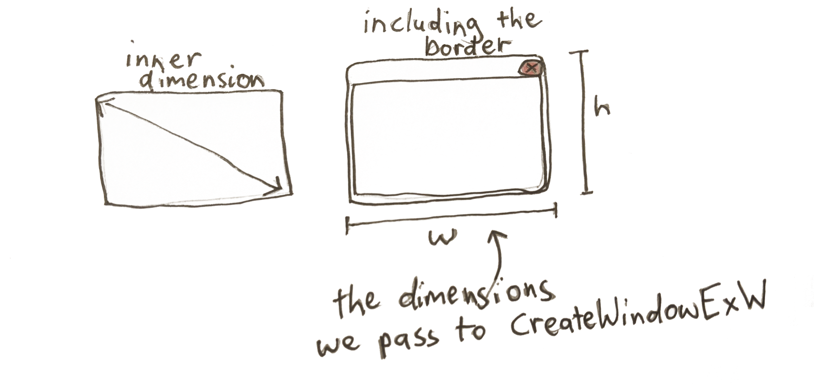

Direct3d 11 for games: Part 1
Creating a window
In this article, I’m going to walk through creating a Direct3D 11 context to use with your games. Direct3D 11 is the native graphics API for Windows. Direct3D has advantages over OpenGL in that it is more reliable on Windows computers — this is an advantage when it comes time to ship your game. You want it to work on as many machines as possible with the least hiccups. You don’t want half your users (or worse!) to load your game up and find a blank screen. The other advantage over OpenGL is that Direct3D is a lot easier to reason about. OpenGL is a giant state machine where you bind textures, vertex arrays, and options like blend modes which stay bound until you specifically unbind them or unset them. This can lead to bugs that can be hard to find. Direct3D 11 API is less of a state machine, and more function calls that you can reason, making the experience of graphics program more enjoyable.
Contents
Entry Point to a Windows program
Creating a Window Class
Windows Message Callback function
Creating our window
The Game Loop
Handling the Operating Systems messages
Quiz
Our Entry Point
Let's get started! The first thing for any Windows program is the windows entry point which we’re going to stick into a C++ file. Let's call it main.cpp. It looks like this:
int WINAPI WinMain(HINSTANCE hInstance, HINSTANCE /*hPrevInstance*/, LPSTR /*lpCmdLine*/, int /*nShowCmd*/) {
return 0;
}
We’ve commented out the variables we don’t use in our program — we only use the first variable of the function, the hInstance — this is the instance of our exe running, which we’re going to need to create a window.
We can compile this to make sure everything is working. We’re using the MSVC compiler from the command line so we’re going to type:
Great! Hopefully, there aren’t any compiler errors.
Creating a Window class
Next, we’re going to declare a window class. This is something you create before actually creating the window to choose the settings for the window. Things like which process this window will belong to, the Icon and cursor symbols. Nothing very special. It looks something like this:
WNDCLASSEXW winClass = {};
winClass.cbSize = sizeof(WNDCLASSEXW);
winClass.style = 0;
winClass.lpfnWndProc = &WndProc;
winClass.hInstance = hInstance;
winClass.hIcon = LoadIconW(0, IDI_APPLICATION);
winClass.hCursor = LoadCursorW(0, IDC_ARROW);
winClass.lpszClassName = L"MyWindowClass";
winClass.hIconSm = LoadIconW(0, IDI_APPLICATION);
if(!RegisterClassExW(&winClass)) {
MessageBoxA(0, "RegisterClassEx failed", "Fatal Error", MB_OK);
return GetLastError();
}
We declare a struct call winClass of type WINDCLASSEXW. Notice we’re using the W versions of the WinAPI functions. There is also the A type. The difference is that the W type support Unicode strings (W meaning wide characters or 2 bytes per character), whereas the A type only support ANSI characters (non unicode, with only 1 byte per character). So to be more up to date we’re using the W functions. There are two other things we’ll add to support unicode:
1. Put the define unicode at the top of our file (above #include windows.h). This tells other windows functions we’re supporting unicode so please help us.
#include <windows.h>
2. Put L before a string literal. This tells the compiler to treat the string as a wide string (2 bytes per character). This looks like this L”MyWindowClass”.
You can read more about Unicode support on windows here üëÜ
For the style you might see CS_HREDRAW | CS_VREDRAW be used in other code you come across. This is to say redraw the window when the window is resized (H for horizontal, V for Vertical). This is only neccessary if you're not re-drawing the window yourself. Since we are using direct3D and redrawing the contents of our window each frame, we don't have to worry about this.
You'll see we also create a MessageBox which (a Windows popup box) if the function fails and exit the program.
Windows Message Callback function
The main thing to notice about the Window Class is we’re passing a pointer to a function called WndProc seen in the line winClass.lpfnWndProc = &WndProc;

This is the callback that handles events sent to our app like resizing, keyboard input, and exiting our program. We have to define it ourselves, so we’ll do that above our main function. It looks like this:
LRESULT result = 0;
switch(msg) {
case WM_CLOSE:
case WM_DESTROY : {
PostQuitMessage(0);
} break;
default:
result = DefWindowProcW(hwnd, msg, wparam, lparam);
}
return result;
}
You’ll see that we’re handling the WM_CLOSE and WM_DESTROY messages sent when the user closes the window. We post a QuitMessage which we’ll handle in our message loop telling the program to exit. All other events we give to the default function for now. Here you'd handle keyboard and mouse input. This article goes into more depth of doing this.
Creating our window
Next we’ll actually create our window.

LONG initialWidth = 960;
LONG initialHeight = 540;
HWND hwnd = CreateWindowExW(WS_EX_OVERLAPPEDWINDOW,
winClass.lpszClassName,
L"Awesome Program Name!",
WS_OVERLAPPEDWINDOW | WS_VISIBLE,
CW_USEDEFAULT, CW_USEDEFAULT,
initialWidth,
initialHeight,
0, 0, hInstance, 0);
if(!hwnd) {
MessageBoxA(0, "CreateWindowEx failed", "Fatal Error", MB_OK);
return GetLastError();
}
We use the CreateWindowExW to actually create our window. We give it the windowclass we created before and give the window a name - in this case "My Window". We also are passing our hInstance (the handle to our exe) and some initial flags — WS_OVERLAPPEDWINDOW | WS_VISIBLE (we want a normal window type and we want our window to be visible).
We also pass the initial size of our window. There is something to note here — the initial width & height of the window include the border, to get the actually inner dimension to be what we want we have to do this:
AdjustWindowRectEx(&initialRect, WS_OVERLAPPEDWINDOW, FALSE, WS_EX_OVERLAPPEDWINDOW);
LONG initialWidth = initialRect.right - initialRect.left;
LONG initialHeight = initialRect.bottom - initialRect.top;
We pass in the dimensions we want for our inner window, and it gives back the dimensions including the border that we should pass to CreateWindow.

So our full code for creating the window ends up looking like this.
RECT initialRect = { 0, 0, 960, 540 };
AdjustWindowRectEx(&initialRect, WS_OVERLAPPEDWINDOW, FALSE, WS_EX_OVERLAPPEDWINDOW);
LONG initialWidth = initialRect.right - initialRect.left;
LONG initialHeight = initialRect.bottom - initialRect.top;
HWND hwnd = CreateWindowExW(WS_EX_OVERLAPPEDWINDOW,
winClass.lpszClassName,
L"Awesome Program Name!",
WS_OVERLAPPEDWINDOW | WS_VISIBLE,
CW_USEDEFAULT, CW_USEDEFAULT,
initialWidth,
initialHeight,
0, 0, hInstance, 0);
if(!hwnd) {
MessageBoxA(0, "CreateWindowEx failed", "Fatal Error", MB_OK);
return GetLastError();
}
We again display a message box to the user if we can't create the window and exit our program.
Great! If we compile this now we should see a window briefly appear then disappear again. Let’s do that.
To compile is now we need to pass a linker flag since we’re using functions that live in user32.lib
Now when we run this and run our main.exe, we should see our window briefly appear. To finish this lesson of we’re going to add the infamous game loop.
The Game Loop

Below our CreateWindow function, we’ll write this:
while(running) {
//NOTE: Our per frame game code here
}
This is the game loop in which we put all our game-logic that get's updated each frame. To actually make this usable we have to add one more thing.
Handling the Operating Systems messages
If we ran this, we’d be stuck in an infinite loop since we don’t handle our messages — specifically our exit message. Each time the OS sends our program a message, it gets added to a queue. This don't get processed by themselves, we ourselves have to empty this queue. The function Peek Message is used to retrieve the message from the bottom of the queue. To process all the messages on the queue, we stay in a while loop until PeekMessage returns false, signifying there aren't any messages left.
For each message we first check if it's a WM_QUIT message, if so we want to exit our game loop. We then use Translate Message to turn any Keyboard Input that is text into WM_CHAR messages. We then call DispatchMessage. All the work of dealing with the messages is done in this function, as it calls our message callback.
We could also use GetMessage to receive our messages. The difference is that GetMessage stays waiting for messages to process, instead of continuing on with the program. If you wanted to make a text editor or slideshow where the program didn't need to update the frames between input you'd want to use GetMessage to save CPU usage. For a game you want PeekMessage since it is animating in real time.
while(running) {
//NOTE: Our message loop we run each frame, going through each message in the queue
MSG msg = {};
while(PeekMessageW(&msg, 0, 0, 0, PM_REMOVE))
{
//NOTE: Set running to false if got a WM_QUIT message
if(msg.message == WM_QUIT) {
running = false;
}
TranslateMessage(&msg);
//NOTE: Send our message to our callback (WndProc)
DispatchMessageW(&msg);
}
}
Now if we compile it using the same code as above (cl main.cpp /link user32.lib) and run it, we’ll get a window that stays open. We can quit it by pressing the Red X.
Awesome! Well done. We’re on our way to getting a direct3d renderer going.
The full code up to this point should look like this:
#define NOMINMAX
#define UNICODE
#include <windows.h>
//NOTE: Our Message Callback
LRESULT CALLBACK WndProc(HWND hwnd, UINT msg, WPARAM wparam, LPARAM lparam)
{
LRESULT result = 0;
switch(msg) {
//NOTE: Handle when the user quits the window
case WM_DESTROY:
case WM_CLOSE: {
PostQuitMessage(0);
} break;
default:
result = DefWindowProcW(hwnd, msg, wparam, lparam);
}
return result;
}
//NOTE: Entry point of our program
int APIENTRY WinMain(HINSTANCE hInstance, HINSTANCE hInstPrev, PSTR cmdline, int cmdshow)
{
// Open a window
HWND hwnd;
{
//NOTE: First register the type of window we are going to create
WNDCLASSEXW winClass = {};
winClass.cbSize = sizeof(WNDCLASSEXW);
winClass.style = 0;
winClass.lpfnWndProc = &WndProc;
winClass.hInstance = hInstance;
winClass.hIcon = LoadIconW(0, IDI_APPLICATION);
winClass.hCursor = LoadCursorW(0, IDC_ARROW);
winClass.lpszClassName = L"MyWindowClass";
winClass.hIconSm = LoadIconW(0, IDI_APPLICATION);
//NOTE: Register the window class and display Error if we can't
if(!RegisterClassExW(&winClass)) {
MessageBoxA(0, "RegisterClassEx failed", "Fatal Error", MB_OK);
return GetLastError();
}
//Now create the actual window
//NOTE: First get the dimensions for the window based on our desired innner window dimension
RECT initialRect = { 0, 0, 960, 540 };
AdjustWindowRectEx(&initialRect, WS_OVERLAPPEDWINDOW, FALSE, WS_EX_OVERLAPPEDWINDOW);
LONG initialWidth = initialRect.right - initialRect.left;
LONG initialHeight = initialRect.bottom - initialRect.top;
//NOTE: Create the Window
hwnd = CreateWindowExW(WS_EX_OVERLAPPEDWINDOW,
winClass.lpszClassName,
L"Awesome Program Name!",
WS_OVERLAPPEDWINDOW | WS_VISIBLE,
CW_USEDEFAULT, CW_USEDEFAULT,
initialWidth,
initialHeight,
0, 0, hInstance, 0);
//NOTE: If we couldn't make the window display an error and exit
if(!hwnd) {
MessageBoxA(0, "CreateWindowEx failed", "Fatal Error", MB_OK);
return GetLastError();
}
}
//NOTE: Our Per Frame Game Loop
bool running = true;
while(running) {
//NOTE: Process our message queue
MSG msg = {};
while(PeekMessageW(&msg, 0, 0, 0, PM_REMOVE))
{
//NOTE: Exit our game loop if we see a WM_QUIT message
if(msg.message == WM_QUIT)
running = false;
TranslateMessage(&msg);
//NOTE: Deliver our message to our message callback
DispatchMessageW(&msg);
}
}
return 0;
}
Sign up to my Newsletter to get a weekly email about what I’m up to, what I’m learning and what I’m teaching.
QUIZ
What function to we use to create a Window?
[CreateWindowExW]
What do we need to pass to CreateWindow?
[A windowClass which we register before creating a window. It also contains the function pointer to out event callback wndProc for handling input]
What do we do at the start of every game loop?
[We process the messages that have come in using PeekMessage. And Dispatch them to our Message Callback we set in our WindowClass]
When is our WndProc function called?
[When we use DispatchMessage()]
Next Lesson
In the next lesson we'll actually start using Direct3D to clear the screen to a color.